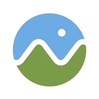
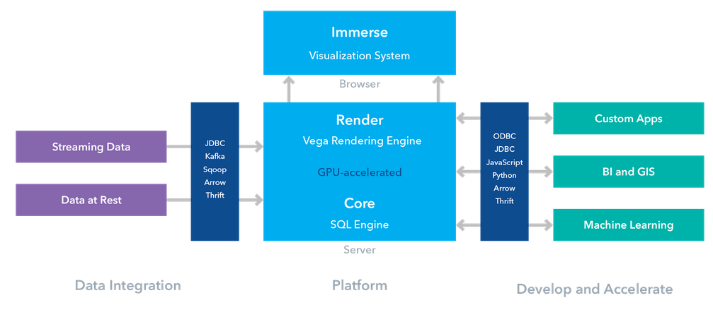
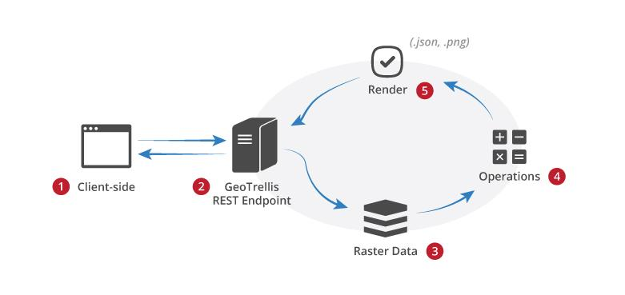
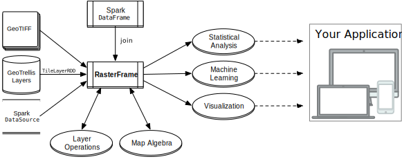
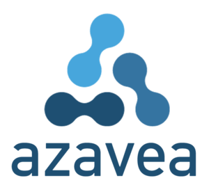
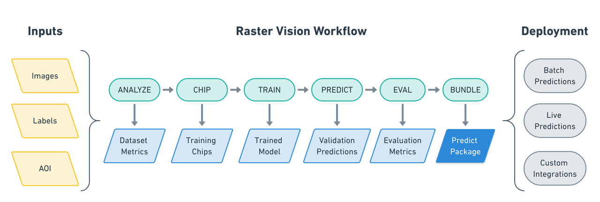
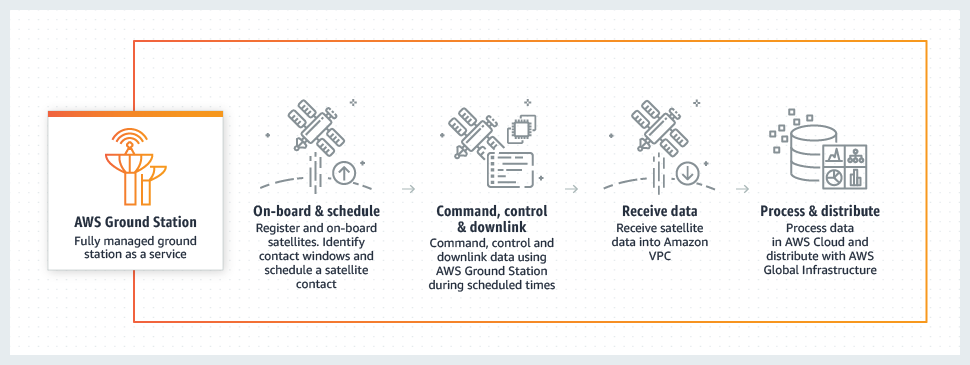

The state of the Open Geospatial World in 2019
This article represents my takeaways from FOSS4GNA 2019 conference. FOSS4G - free and open source software for geospatial industry is part of the larger OSGeo organization.
Executive summary¶
Big data¶
Managing big data is the talk of the town. A number of players are solving different aspects of geospatial big data problem. - Element84 is working on Cumulus with NASA for ETL of RS data on AWS cloud. - GeoTrellis is working on scalable raster analysis on Apache Spark. - GeoMesa for vector data on top of Accumulo, Hbase, Cassandra db etc. - PanGeo is working on a hosted notebook server solution for analyzing big geospatial raster datasets. - OmniSci core is a high GPU database query engine. - Google Earth Engine has been revived and being maintained.
Imagery analysis¶
It was surprising to see raster and satellite imagery analysis be spoken at forefront. It was common understanding that we are about to witness an explosion in availability of Earth Observation (EO) images (via dove, cube sats, drone images, NASA and other international space agency satellites). And a number of products were focussed on solving the data analysis challenge such as GeoTrellis, PanGeo, Google Earth Engine.
Efficient tiling engines - GeoTrellis, other providers build tiles off raster outputs and serve that. The idea is serving WMTS is less CPU intensive than WMS (which is dynamic)
NASA appears to be a big customer of FOSS4G on the cloud. Companies like Element84, Pangeo seem to be born out of NASA's transition to cloud.
Data discoverability¶
The amount of data collected is projected to grow exponentially. However, today, different vendors use custom or sometimes proprietary metadata files, making indexing and searching difficult. Thus, STAC - SpatioTemporal Asset Catalog is a common specification created to describe a range of geospatial datasets (Imagery, SAR, Point Clouds, Scientific data, FMV etc.).
Even though STAC is relatively new (release in April 2018), a number of APIs, applications have already adopted this standard. For instance, sat-api of sat utils project from Developmentseed was used as a premier example of embracing STAC
NASA's transition (specifically the NASA ACCESS 2017 grant) appears to drive creation of new standards like STAC. New cloud-native data formats such as Cloud optimized GeoTIFF, Zarr (Z arryas for nD data similar to netCDF) are being worked upon.
Other observations¶
Even though the FOSS ecosystem appears fragmented, a number of libraries effectively self-organize and reuse one another. For instance, intake (which specializes in data discovery, loading, management, dissemination) uses Xarray which uses rasterio wich again uses GDAL for loading rasters.
Python is everywhere. Most scientific analysis presentations used Python APIs to some extent.
FOSS is struggling to maintain funding and a number of core projects have a very tiny team that's building them.
While the above is about what was seen at FOSS4G, it is also important to note what was missing. There was little mention about native smartphone applications. I could not find a framework that allowed platform agnostic (or not) development of runtime applications. There wasn't an equivalent to ArcGIS Runtime stack. My colleague noted the absence of the term
Data Science. While this crowd is certainly technical and does advanced machine learning, they don't to use or associate with the term Data Science.
Points to ponder¶
- Should ArcGIS Image Server evaluate Spark stack for distributed raster processing (like it's existing GeoAnalytics stack)?
- A participant noted that ArcGIS Online needs an easy, one step imagery publishing functionality. The barrier to analyzing raster is to purchase and set up ArcGIS Desktop or ArcGIS Enterprise. Further, the AGS JS API cannot display and work with local rasters. These shortcomings raise the barrier when users need to analyze their own imagery datasets. FOSS on the other hand has identified this shortcoming and products like GeoTiff.io were created which allows you to quickly analyze your local rasters right in your browser.
Products seen in the wild at FOSS4GNA¶
Cesium GIS:¶
|  | Ceasium is primarily for 3D GIS. Products include - ion - cloud platform - 3D tiling pipeline - SDK - 3D Content - imagery, 3D Tiles etc. |
Crunchy data¶
| | Crunchy is enterprise postgreSQL leader. They got postgres for cloud etc. As is, this is not a FOSS4G company. Just that Paul Ramsey works there. |
[Geosurge.io] - no website yet.¶
| | Works on http://app.geotiff.io/ a UX for analyzing raster data on the browser using JS, client side computations |
Omnisci¶
Omnisci has GPU based high speed sql queries. Their chief evangelist said "Speed is so high, that we don't worry about spaital indexing". Go to https://www.omnisci.com/demos/ and https://omnisci.cloud/accounts/login/?next=/ to spin up a trial omnisci cloud for you.
- Omnisci's core is FOSS, but higher stacks are SAAS, something similar to carto.com.
- Omnisci Immerse is similar to Insights for ArcGIS product.
- They talk about "VAST data" (volume, agility, spatio temporal data) and their platform is uniquely positioned to analyze that.
- From a climate science talk: A typical data analysis workflow is to use omnisci (cloud) for cleaning big data in the cloud. Then download to disk for Jupyter Notebooks and Python libraries like seaborn, geopandas, xarray to visualize, explore and analyze.
- Below is an architecture diagram of Omnisci cloud:
- 
Google Earth Engine OSS server:¶
 GEE is not dead, it is being maintained at http://www.opengee.org/. The talk showed how to build tilecache for local datasets, load on GEE. But the speaker ran into many issues and it looked cumbersome to work with.
GEE is not dead, it is being maintained at http://www.opengee.org/. The talk showed how to build tilecache for local datasets, load on GEE. But the speaker ran into many issues and it looked cumbersome to work with.
GeoTrellis¶
is a Scala Lib to work with raster data using Apache spark. It can do fast IO, map algebra, R2V, V2R conversions. It can render outputs to PNGs. It can perform dynamic computations as well as batch processing. The diagram below shows their overall architecture: 
Some recent additions allow GeoTrellis to build vector tiles off vector data, work with point cloud data, streaming data and they are working to enable GeoTrellis speak to GeoServer.
Geotrellis had a lot of contributors and speakers from Azavea and the theme of this talk was 'cloud native GIS apps' as opposed to Service Oriented Architecture (SOA) of traditional GIS Server apps.
Geotrellis/RasterFrames¶
is spark DF for raster data. It allows to perform spatiotemporal queries, map algebra ops on rasters along side Spark ML algorithms. 
The PyRasterFrames provides Python bindings for Geotrellis scala API. PyRF is based on PySpark API. Their MAML (map algebra modeling language) was shown off significantly.
Azavea¶
 appears to sponsor most of GeoTrellis work, their demo servers and speakers at this conference. Most of Azavea's talks were packed.
Azavea/rasterVision¶
framework is something to be noted. This API builds on top of Tensorflow and supports workflows such as classification, object detection and semantic segmentation of satellite images. 
Raster Vision's goal seems to be well defined. The why? article clearly outlines how Azavea pictures this library as a plumber and how it benefits in creating a repeatable and deployable deep learning pipeline.
In these ways, raster vision is aligned with the 'learn' module of the ArcGIS API for Python.
GeoMesa¶
 is for large-scale spatial querying, analytics on distributed systems. SpatioTemportal indexing on top of Accumulo, Hbase, Cassandra db etc for vector data.
is for large-scale spatial querying, analytics on distributed systems. SpatioTemportal indexing on top of Accumulo, Hbase, Cassandra db etc for vector data.
I did not collect more information about this product. I left that to my expert colleagues from database teams.
AWS¶
Arguably the elephant in the room. AWS was one of the biggest sponsors of this conference and its Geo Data lead Joe Flasher did a pretty good job of being a technical evangelist and also supporting a lot of his customers (including Esri) in a number of other talks.
Why is AWS interested in FOSS4G? Simply because its customers are. NASA and DigitalGlobe are two of its biggest customers and AWS is pretty vested in supporting them.
Joe spoke about https://registry.opendata.aws/ which contains all open data including spatial. Some subsets from the site are
The landing page https://aws.amazon.com/earth/ is geared toward its efforts in the geospatial sector. This page features a number of talks on this topic from customers of AWS. (Esri's Peter Becker's talk from reInvent is featured here).
He spoke about AWS Snowball edge which is a portable AWS cloud that gets shipped out to disaster response centers for their local VPC. During such calamities, (for customers like element84), they start a data checkout into the snowball edge. STAC is the protocol for how data is laid out.

AWS is also building a ground station network for satellite data reception. Thus straight from satellite into AWS infrastructure. This has been functional since 2018 Nov.
AWS and a few other companies sponsor the https://spacenet.ai/ contains ML challenges to be solved in the GeoAI community.
Here technologies¶
showed off their geospatial platform. It looked good, but I didn't go into the details. Their emphasis however, seemed to be around managing mapping data from and for autonomous vehicles.
Speaker slide decks and other resources¶
There isn't a formal place where the decks are shared. These are the ones I manage to source from Twitter and other similar sources - Paul Ramsey's keynote on FOSS lifecycle - Gretchen's blog post - My slide deck on 'Let's take the machines house hunting'
Resources: - GIS Carpentry This teaches EDA using R. The root page for all geosaptial data carpentry is here.